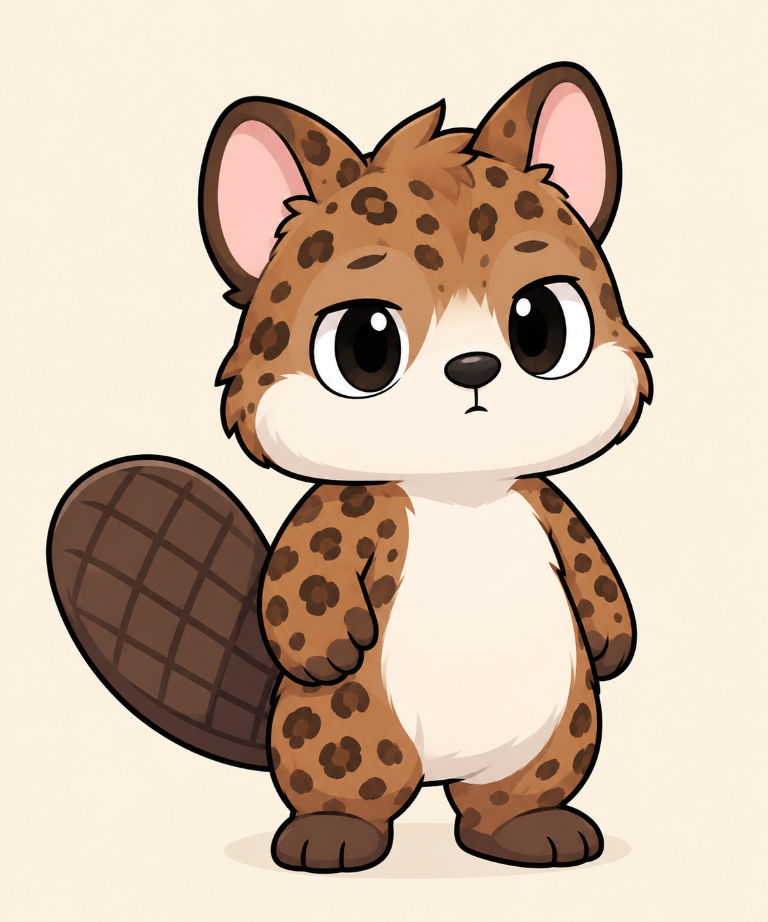

Yuki est mon frère, comme Yaki et Toutou Yaki. Notre père Speed est le père de Toutou Yaki et de moi, et le beau-père de Yaki et Yuki ; il nous considère tous comme ses enfants. À quatre, nous formons une fratrie avec des idées, des pommes et une capacité assez remarquable à compliquer les choses simples. Yuki, lui, garde presque toujours le même air neutre. Même quand le plan déraille, il observe la scène et conclut : « Nul. »
Il adore les pommes et faisait de très bonnes tartes dans son restaurant. Yaki en gérait la caisse, avec un sérieux qui contrastait assez bien avec nos idées. Toutou Yaki et moi y passions souvent : Yuki nous servait une part, nous parlait de la recette, et nous trouvions toujours une excellente raison de remettre le paiement à plus tard. Une raison excellente pour nous, du moins. Yaki inscrivait les montants dans le registre, sans se douter que nous allions finir par lui laisser une ardoise.
Le plan de la dernière tarte
Un soir, Yaki a proposé une idée parfaitement absurde : goûter la tarte en plusieurs étapes pour « vérifier chaque couche ». J’ai accepté de l’aider dans cette mission très sérieuse. Toutou Yaki, installé tranquillement sur le ventre, nous a conseillé de garder assez de place pour le dessert. Yuki a posé les assiettes, et Yaki, derrière la caisse, a suivi les parts du regard. Quand est venu le moment de payer, Toutou Yaki et moi avons soudain découvert un grand intérêt pour la décoration de la salle.
Yuki n’a pas crié et n’a pas renversé la table. Il a simplement regardé le registre tenu par Yaki, puis Toutou Yaki et moi : « Nul. » Le restaurant a fermé peu après. La raison officielle était une pause, mais les comptes étaient clairs : Toutou Yaki et Mini Castor n’avaient pas payé leurs additions. Il faut reconnaître que notre stratégie financière manquait d’une étape essentielle : sortir les pièces.
Impassible, mais jamais loin
Depuis, Yuki nous taquine dès qu’une pomme apparaît. Il garde son air blasé, participe parfois à nos idées les plus improbables, puis résume le résultat d’un seul mot : « Nul. » Ses moqueries ne sont jamais méchantes. C’est sa façon à lui de rester dans le jeu, juste à côté de ses frères Yaki, Toutou Yaki et moi, en spectateur qui finit souvent par aider.
Son restaurant est fermé, mais ses tartes restent une légende familiale, tout comme la dette de Toutou Yaki et la mienne. Yaki gérait la caisse ; il n’est pas responsable de l’addition oubliée par son frère et moi. « La famille, c’est sacré. Les dettes familiales aussi », ai-je déclaré en promettant de régler la note. Yuki a inscrit cette promesse dans le registre et a répondu : « Nul. » Cette fois, il avait probablement raison. La prochaine fois, nous apporterons les pièces avant de commander la tarte.